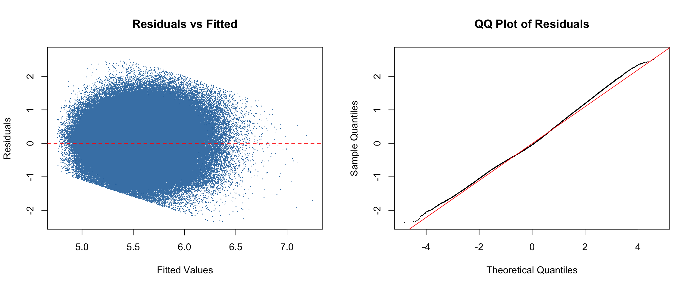

Main Analysis: Mixed-Effects Models
To account for the hierarchical structure of the data — words nested within participants and paragraphs — we use linear mixed-effects models. This directly addresses the limitation of Portfolio 1, which used ordinary linear regression and did not account for the non-independence of observations within participants and paragraphs
I built three models of increasing complexity to test (1) whether contextual predictability adds predictive value beyond word frequency, and (2) whether the two interact.
Model 1: Frequency + Word Length (Baseline)
model1 <- lmer(log_dwell ~ freq_centered + length_centered +
(1 | participant_id) + (1 | paragraph_id),
data = ia_clean)
summary(model1)## Linear mixed model fit by REML. t-tests use Satterthwaite's method [
## lmerModLmerTest]
## Formula: log_dwell ~ freq_centered + length_centered + (1 | participant_id) +
## (1 | paragraph_id)
## Data: ia_clean
##
## REML criterion at convergence: 1129004
##
## Scaled residuals:
## Min 1Q Median 3Q Max
## -4.2947 -0.6845 -0.0846 0.6521 4.7464
##
## Random effects:
## Groups Name Variance Std.Dev.
## participant_id (Intercept) 0.0381865 0.19541
## paragraph_id (Intercept) 0.0003513 0.01874
## Residual 0.3131059 0.55956
## Number of obs: 672671, groups: participant_id, 180; paragraph_id, 7
##
## Fixed effects:
## Estimate Std. Error df t value Pr(>|t|)
## (Intercept) 5.522e+00 1.622e-02 1.012e+02 340.46 <2e-16 ***
## freq_centered 1.609e-02 1.638e-04 6.725e+05 98.24 <2e-16 ***
## length_centered 3.723e-02 3.317e-04 6.725e+05 112.24 <2e-16 ***
## ---
## Signif. codes: 0 '***' 0.001 '**' 0.01 '*' 0.05 '.' 0.1 ' ' 1
##
## Correlation of Fixed Effects:
## (Intr) frq_cn
## freq_centrd 0.000
## lngth_cntrd 0.000 -0.595Model 2: Adding Surprisal
model2 <- lmer(log_dwell ~ freq_centered + surprisal_centered + length_centered +
(1 | participant_id) + (1 | paragraph_id),
data = ia_clean)
summary(model2)## Linear mixed model fit by REML. t-tests use Satterthwaite's method [
## lmerModLmerTest]
## Formula: log_dwell ~ freq_centered + surprisal_centered + length_centered +
## (1 | participant_id) + (1 | paragraph_id)
## Data: ia_clean
##
## REML criterion at convergence: 1122636
##
## Scaled residuals:
## Min 1Q Median 3Q Max
## -4.3397 -0.6830 -0.0825 0.6524 4.7819
##
## Random effects:
## Groups Name Variance Std.Dev.
## participant_id (Intercept) 0.0382293 0.19552
## paragraph_id (Intercept) 0.0003695 0.01922
## Residual 0.3101486 0.55691
## Number of obs: 672671, groups: participant_id, 180; paragraph_id, 7
##
## Fixed effects:
## Estimate Std. Error df t value Pr(>|t|)
## (Intercept) 5.521e+00 1.631e-02 9.654e+01 338.59 <2e-16 ***
## freq_centered 8.351e-03 1.896e-04 6.725e+05 44.05 <2e-16 ***
## surprisal_centered 1.811e-02 2.261e-04 6.725e+05 80.08 <2e-16 ***
## length_centered 3.630e-02 3.303e-04 6.725e+05 109.90 <2e-16 ***
## ---
## Signif. codes: 0 '***' 0.001 '**' 0.01 '*' 0.05 '.' 0.1 ' ' 1
##
## Correlation of Fixed Effects:
## (Intr) frq_cn srprs_
## freq_centrd 0.000
## srprsl_cntr -0.001 -0.510
## lngth_cntrd 0.000 -0.493 -0.035Model 3: Frequency × Surprisal Interaction
model3 <- lmer(log_dwell ~ freq_centered * surprisal_centered + length_centered +
(1 | participant_id) + (1 | paragraph_id),
data = ia_clean)
summary(model3)## Linear mixed model fit by REML. t-tests use Satterthwaite's method [
## lmerModLmerTest]
## Formula: log_dwell ~ freq_centered * surprisal_centered + length_centered +
## (1 | participant_id) + (1 | paragraph_id)
## Data: ia_clean
##
## REML criterion at convergence: 1122592
##
## Scaled residuals:
## Min 1Q Median 3Q Max
## -4.2465 -0.6832 -0.0822 0.6523 4.7932
##
## Random effects:
## Groups Name Variance Std.Dev.
## participant_id (Intercept) 0.03824 0.19556
## paragraph_id (Intercept) 0.00037 0.01923
## Residual 0.31012 0.55688
## Number of obs: 672671, groups: participant_id, 180; paragraph_id, 7
##
## Fixed effects:
## Estimate Std. Error df t value
## (Intercept) 5.523e+00 1.631e-02 9.651e+01 338.578
## freq_centered 8.725e-03 1.952e-04 6.725e+05 44.705
## surprisal_centered 1.900e-02 2.521e-04 6.725e+05 75.379
## length_centered 3.557e-02 3.428e-04 6.725e+05 103.769
## freq_centered:surprisal_centered -1.566e-04 1.945e-05 6.725e+05 -8.051
## Pr(>|t|)
## (Intercept) < 2e-16 ***
## freq_centered < 2e-16 ***
## surprisal_centered < 2e-16 ***
## length_centered < 2e-16 ***
## freq_centered:surprisal_centered 8.22e-16 ***
## ---
## Signif. codes: 0 '***' 0.001 '**' 0.01 '*' 0.05 '.' 0.1 ' ' 1
##
## Correlation of Fixed Effects:
## (Intr) frq_cn srprs_ lngth_
## freq_centrd 0.004
## srprsl_cntr 0.006 -0.339
## lngth_cntrd -0.004 -0.525 -0.148
## frq_cntrd:_ -0.014 -0.238 -0.442 0.267Model Comparison
anova(model1, model2, model3)## Data: ia_clean
## Models:
## model1: log_dwell ~ freq_centered + length_centered + (1 | participant_id) + (1 | paragraph_id)
## model2: log_dwell ~ freq_centered + surprisal_centered + length_centered + (1 | participant_id) + (1 | paragraph_id)
## model3: log_dwell ~ freq_centered * surprisal_centered + length_centered + (1 | participant_id) + (1 | paragraph_id)
## npar AIC BIC logLik -2*log(L) Chisq Df Pr(>Chisq)
## model1 6 1128979 1129048 -564484 1128967
## model2 7 1122599 1122679 -561292 1122585 6382.195 1 < 2.2e-16 ***
## model3 8 1122536 1122627 -561260 1122520 64.818 1 8.216e-16 ***
## ---
## Signif. codes: 0 '***' 0.001 '**' 0.01 '*' 0.05 '.' 0.1 ' ' 1The model comparison via likelihood ratio tests revealed that each successive model significantly improved fit. Adding GPT-2 surprisal (Model 2) significantly improved fit over the baseline frequency + word length model, Χ²(1) = 6382.20, p < .001, indicating that contextual predictability explains additional variance in dwell time beyond what word frequency and word length already capture. Adding the frequency × surprisal interaction (Model 3) further improved fit over the additive model, Χ²(1) = 64.82, p < .001, suggesting that the effects of frequency and surprisal on reading time are not purely additive but depend on each other.
Model Diagnostics
par(mfrow = c(1, 2))
plot(fitted(model3), resid(model3),
xlab = "Fitted Values", ylab = "Residuals",
main = "Residuals vs Fitted", pch = ".", col = "steelblue")
abline(h = 0, col = "red", lty = 2)
qqnorm(resid(model3), main = "QQ Plot of Residuals", pch = ".")
qqline(resid(model3), col = "red")
The residuals vs. fitted plot shows residuals roughly centered around zero with no strong systematic pattern, suggesting that the model does not exhibit major violations of linearity or homoscedasticity. The QQ plot indicates that the residuals are approximately normally distributed.
Model Results
tab_model(model3,
title = "Mixed-Effects Model: Frequency × Surprisal Interaction",
dv.labels = "Log Dwell Time",
show.stat = TRUE)| Log Dwell Time | ||||
|---|---|---|---|---|
| Predictors | Estimates | CI | Statistic | p |
| (Intercept) | 5.52 | 5.49 – 5.55 | 338.58 | <0.001 |
| freq centered | 0.01 | 0.01 – 0.01 | 44.70 | <0.001 |
| surprisal centered | 0.02 | 0.02 – 0.02 | 75.38 | <0.001 |
| length centered | 0.04 | 0.03 – 0.04 | 103.77 | <0.001 |
|
freq centered × surprisal centered |
-0.00 | -0.00 – -0.00 | -8.05 | <0.001 |
| Random Effects | ||||
| σ2 | 0.31 | |||
| τ00 participant_id | 0.04 | |||
| τ00 paragraph_id | 0.00 | |||
| ICC | 0.11 | |||
| N participant_id | 180 | |||
| N paragraph_id | 7 | |||
| Observations | 672671 | |||
| Marginal R2 / Conditional R2 | 0.076 / 0.178 | |||
The fixed effects from the interaction model are summarized in the table above. The intercept, b = 5.52, 95% CI[5.49, 5.55], t = 338.58, p < .001, represents the predicted log dwell time for a word of average frequency, average surprisal, and average length. The main effect of word frequency was significant, b = 0.01, 95% CI [0.01, 0.01], t = 44.70, p < .001, indicating that higher word frequency values were associated with longer log dwell times. The main effect of GPT-2 surprisal was also significant, b = 0.02, 95% CI [0.02, 0.02], t = 75.38, p < .001, confirming that less predictable words (higher surprisal) incurred longer processing times. Word length, included as a control variable, was a significant predictor as well, b = 0.04, 95% CI [0.03, 0.04], t = 103.77, p < .001, with longer words receiving longer fixations.
Critically, the interaction between word frequency and GPT-2 surprisal was significant, b = -0.00, t = -8.05, p < .001. The negative interaction coefficient indicates that the positive effect of surprisal on dwell time is attenuated at higher levels of word frequency. In other words, the processing cost of encountering a contextually unexpected word is slightly reduced for higher-frequency words, suggesting that word frequency provides some buffer against the difficulty of contextual unpredictability.